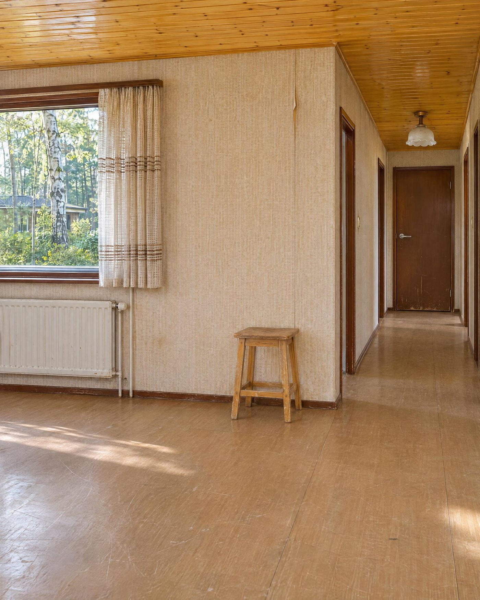
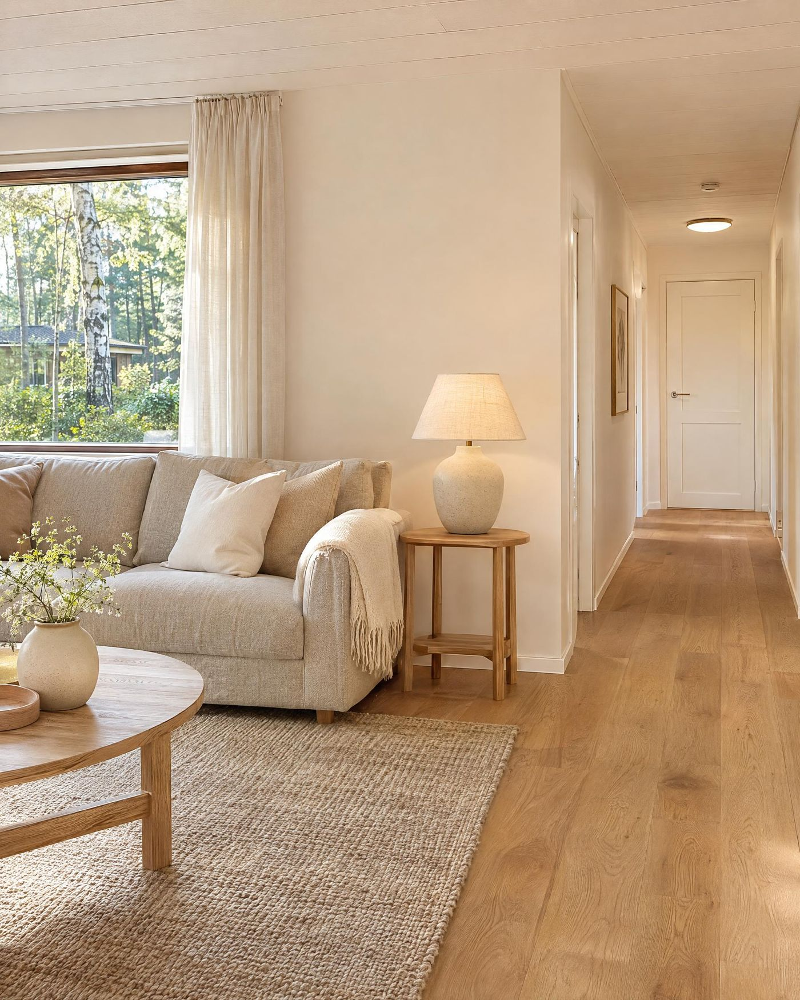
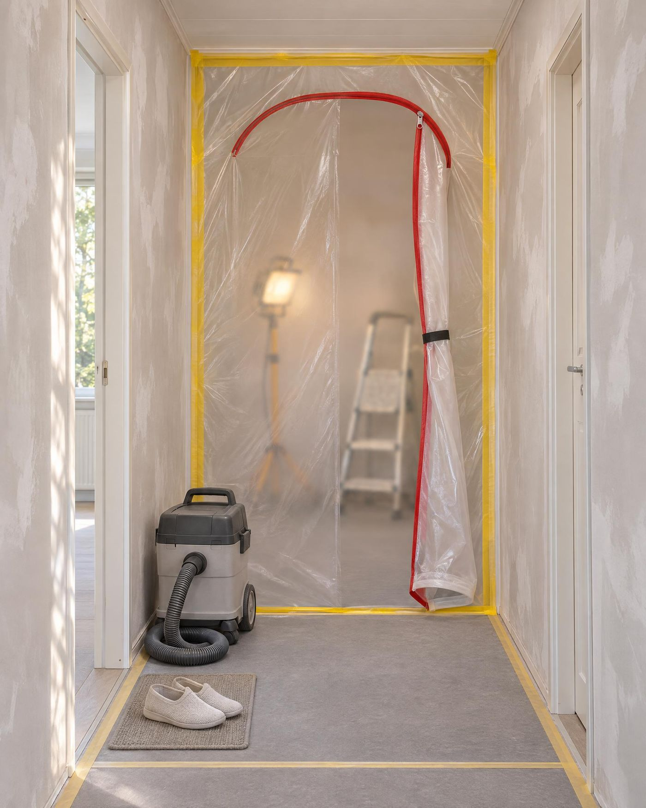

Kokonaisremontit ja kunnostus
Koko kodin remontti yhdellä aikataululla
Remontoimme koko talon tai asunnon pinnoista tekniikkaan Porvoossa ja lähialueilla. Työt etenevät yhdessä aikataulussa, vaikka niitä on monta.

Havainnekuva 01Ennen Havainnekuva
02Työn aikana
Havainnekuva
02Työn aikana

Havainnekuva 03ValmisPutki- ja sähkötyöt
Rakennustyöt, putket ja sähkö samassa aikataulussa
Kokonaisremontissa työt riippuvat toisistaan. Putket ja sähköt tehdään, kun rakenteet ovat auki, ja pinnat vasta niiden jälkeen.
Siksi remontin putki- ja sähkötyöt sovitetaan samaan aikatauluun rakennustöiden kanssa. Sinulla on yksi yhteyshenkilö, eikä sinun tarvitse sovittaa eri tekijöiden aikatauluja yhteen.
Suojaus ja purku
Suojaamme säilyvät pinnat ja puramme vanhat rakenteet ja kalusteet.
Putket ja sähköt
Tekniikka uusitaan tai siirretään, kun seinät ja lattiat ovat auki.
Märkätilat
Kylpyhuone ja WC tehdään omana kokonaisuutenaan vedeneristyksestä laatoitukseen. Katso vaiheet.
Seinät, katot ja lattiat
Tasoitamme, maalaamme ja asennamme uudet lattiat.
Keittiö ja kiintokalusteet
Kalusteet, tasot ja koneet asennetaan valmiille pinnoille. Lue keittiöremontista.
Listat, viimeistely ja luovutus
Käymme valmiin kodin läpi kanssasi huone kerrallaan.

HavainnekuvaArki remontin aikana
Näistä sovimme ennen kuin työ alkaa
Iso remontti tehdään kodissa, jossa joku asuu. Kun nämä kuusi asiaa on sovittu etukäteen, tiedät, miltä viikot näyttävät.
Suojaus
Mitkä lattiat, portaat ja kiintokalusteet suojataan ja mitkä huonekalut siirretään pois.
Pöly
Mitkä huoneet suljetaan pölyseinällä ja mitä reittiä työmaalle kuljetaan.
Vesikatkot
Missä vaiheissa vesi on poikki ja kuinka kauan.
WC ja suihku
Missä järjestyksessä märkätilat tehdään ja miten peseytyminen hoituu sillä välin.
Avaimet ja kulku
Miten pääsemme kohteeseen, kun et ole kotona, ja kuka avaimesta vastaa.
Työajat ja melu
Mihin aikaan työskentelemme ja milloin tehdään äänekkäimmät työt. Taloyhtiössä noudatamme sen järjestyssääntöjä.
Vaiheistus
Voiko remontin tehdä osissa?
Voi. Remontti kannattaa usein jakaa niin, että kotona voi asua koko ajan.
Huone kerrallaan
Pintaremontti etenee huone kerrallaan, ja muut huoneet pysyvät käytössä.
Kylpyhuone ja keittiö ensin
Kylpyhuone ja keittiö vaikuttavat arkeen eniten. Ne aikataulutetaan ensin ja muu työ niiden ympärille.
Kerro tarjouspyynnössä, jos haluat jakaa remontin vaiheisiin. Silloin tarjouskin tehdään vaiheittain.
Pienemmät työt
Kunnostus ja pienet korjaukset
Kaikki ei ole koko talon remonttia. Teemme myös pienet korjaukset ja vanhan rakennuksen kunnostuksen.
Usein kysyttyä
Kokonaisremontista kysytään näitä
Voinko asua kotona remontin ajan?
Usein voit, kun remontti vaiheistetaan. Jos keittiö ja ainoa kylpyhuone ovat pois käytöstä yhtä aikaa, asuminen muualla voi olla sen ajan helpompaa. Käymme tämän läpi käynnillä kohteessa.
Tarvitaanko remonttiin lupia?
Taloyhtiössä osakas ilmoittaa remontista kirjallisesti hallitukselle tai isännöitsijälle ennen työn aloittamista, jos työ voi vaikuttaa yhtiön vastuulla oleviin osiin. Lähde: asunto-osakeyhtiölaki (Finlex).
Omakotitalossa kunnan rakennusvalvonta kertoo, tarvitseeko muutos luvan.
Miten kokonaisremontin hinta muodostuu?
Hintaan vaikuttavat pinta-ala, purettavan määrä, märkätilojen ja keittiön osuus sekä materiaalit. Tarjouksessa työ ja tarvikkeet on eritelty. Lue lisää hinnasta ja remontin kulusta.
Talo on valmistunut ennen vuotta 1994. Mitä se tarkoittaa?
Vanhoissa rakennusmateriaaleissa voi olla asbestia. Siksi purettavista rakenteista tehdään asbestikartoitus ennen purkutyötä. Kartoitus vaikuttaa aikatauluun, joten kerro talon valmistumisvuosi jo tarjouspyynnössä.
Lähde: Työsuojeluhallinto: asbesti.
Tarjouspyyntö
Kerro remontista, niin katsotaan se yhdessä
Neljä lyhyttä vaihetta ja kolme kuvaa kohteesta. Neliöitä ei tarvitse mitata.
- 01Lähetät pyynnön ja kuvat.
- 02Otamme yhteyttä ja sovimme käynnin kohteessa.
- 03Saat kirjallisen tarjouksen.
Vai soitammeko sinulle?
Jätä numerosi ja kerro, milloin sinut tavoittaa parhaiten.
Soittopyyntö on valmis
Soittoa toivottu . Tämä on demo: mitään ei lähetetty eikä tallennettu.